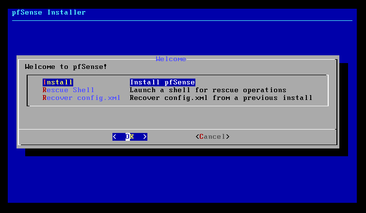
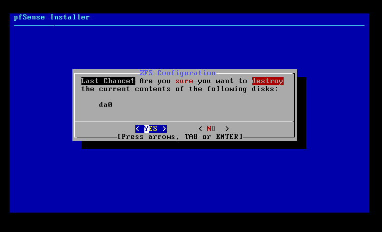
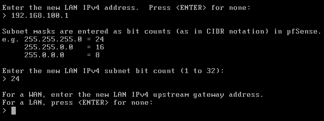
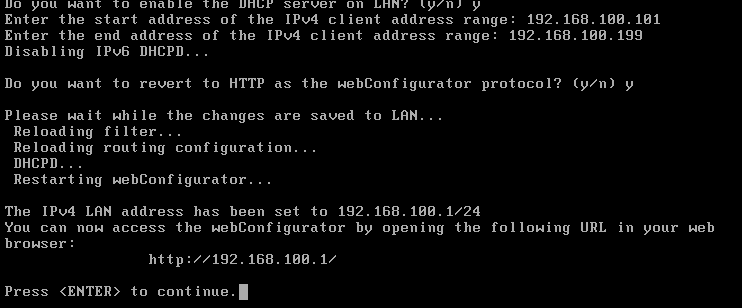
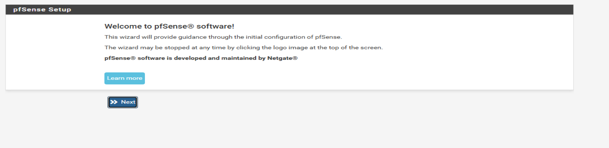
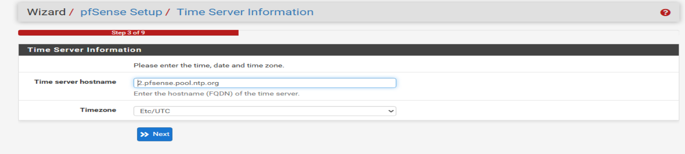
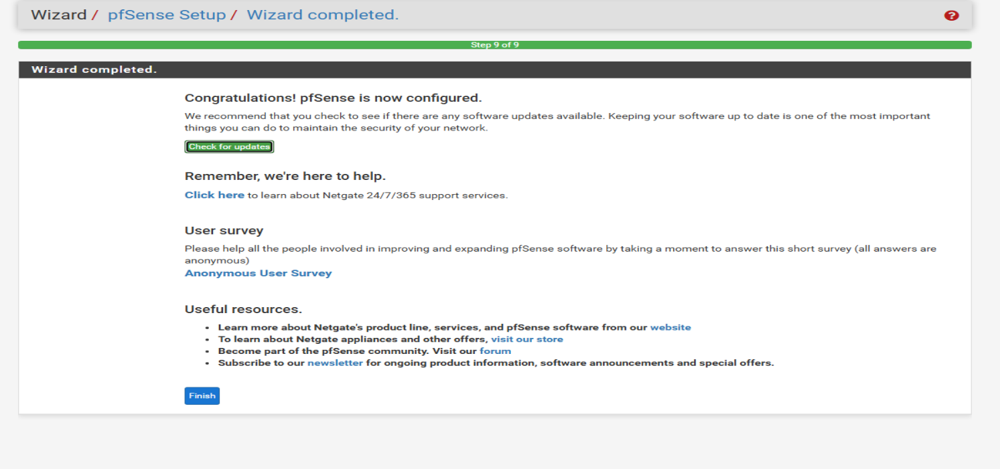
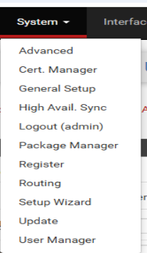
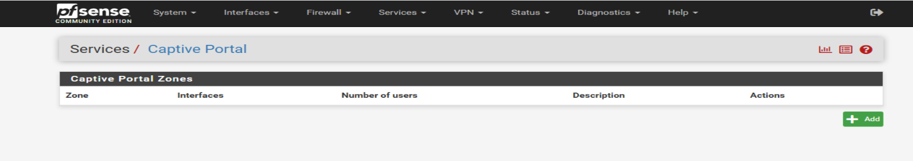

Présentation de pfSense
pfSense est un pare-feu/routeur open source basé sur FreeBSD. Il s'administre via une interface web et propose des fonctionnalités avancées : DHCP, NAT, VPN, VLAN, portail captif. Dans mon infra, c'est la VM Laniakea qui fait tourner pfSense (WAN : 192.168.1.145, LAN : 192.168.10.1).
Démarrage et installation
On démarre depuis l'ISO pfSense. L'installeur démarre en console. Il faut choisir la méthode d'installation (guidée ou manuelle), puis sélectionner le disque cible. L'installation prend quelques minutes.

Configuration des interfaces
Après l'installation et le redémarrage, pfSense détecte les interfaces réseau et demande d'assigner le WAN et le LAN. On indique les noms des interfaces (em0 pour WAN, em1 pour LAN par exemple). L'IP LAN est configurée ici, ainsi que l'activation du DHCP.


Configuration initiale via l'interface web
Une fois l'interface accessible (192.168.1.1 par défaut), l'assistant de configuration se lance. Il guide à travers le nom d'hôte, les DNS, le fuseau horaire, et la configuration WAN. On change aussi le mot de passe admin par défaut.


Services disponibles
pfSense propose beaucoup de services intégrés. Les plus utiles en entreprise : DHCP Server (attribution automatique d'IP), DNS Forwarder/Resolver, NAT pour faire passer le trafic LAN vers internet, et le module VPN pour les accès distants.

Configuration DHCP
Le serveur DHCP de pfSense distribue les adresses IP sur le LAN. On définit la plage d'attribution, la passerelle, les DNS. On peut aussi créer des baux statiques pour attribuer toujours la même IP à un équipement via son adresse MAC.


Fin d'installation
Une fois tout configuré, pfSense est opérationnel. On peut vérifier que les interfaces sont bien up, que le DHCP distribue des adresses, et que les clients LAN ont accès à internet via le NAT.
